Co-op Commander Guide: Stukov
Infested Admiral
Sections on this Page
Commander Summary
Stukov dominates the battlefield by overwhelming his enemies with large numbers of infested units.

Level Unlocks
| Level/Icon | Name | Description |
|---|---|---|
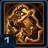 |
Infestation |
Stukov begins with an Infested Colonist Compound that automatically generates Infested infantry units every 60 seconds for no cost. Stukov’s primary structure generates creep at an accelerated rate and unlimited range. |
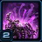 |
Hostile Incubation | Infest Structure can now store two additional charges and can target enemy structures, disabling them in addition to spawning Broodlings. |
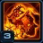 |
Epidemic |
Unlocks an additional level of Infestation at the Infested Colonist Compound. Also unlocks an upgrade at the Infested Command Center to increase the number of Broodlings spawned by Infest Structure by 50%. |
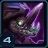 |
Apocalisk | Unlocks the ability to spawn an Apocalisk at the target location. The Apocalisk is controllable and will fight for 60 seconds. Spawn the Apocalisk from the top panel. |
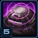 |
Infested Engineering Bay Upgrade Cache |
Unlocks the following upgrades at the Infested Engineering Bay:
|
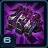 |
Corrupted Conscription | Spawn Infested Marine can now store 10 additional charges and Infested Marines now spawn 100% faster. |
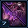 |
Infested Infantry Upgrade Cache |
Unlocks an upgrade at the Infested Colonist Compound that spawns Broodlings when Infested Civilians die. Unlocks an upgrade at the Infested Barracks Tech Lab that enables Infested Marines and Infested Troopers to deal additional damage over time to units they attack. |
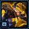 |
New Unit: Brood Queen |
Flying support unit. Can use Ocular Symbiote and Spawn Broodlings. Can attack air units. |
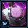 |
Infested Factory Upgraded Cache |
Unlocks the following upgrades at the Infested Factory Tech Lab:
|
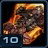 |
Aleksander | Unlocks the ability to call down the Aleksander at the target location. The Aleksander is controllable and will fight for 60 seconds. Call down the Aleksander from the top panel. |
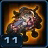 |
Infested Starport Upgrade Cache |
Unlocks the following upgrades at the Infested Starport Tech Lab:
|
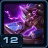 |
Incendiary Prosthetics | Increases the area damage dealt by the Apocalisk’s attacks and its initial spawn by 100%. |
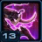 |
Brood Queen Upgrade Cache |
Unlocks the following upgrade at the Infested Starport Tech Lab:
|
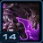 |
Engorged Bunkers | Increases the number of units that Infested Bunkers can hold by 2, and increases the spawning rate of Infested Troopers by 20%. |
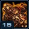 |
Neural Infestation | Stukov gains control of enemy units who are under attack from the Aleksander’s tentacles. |
Highlighted rows denote large power spikes for the commander.
Achievements
The commander-specific achievements for Stukov are:
| Achievement | Name | Description |
|---|---|---|
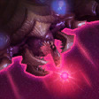 |
A Brood of Your Own | Deal 10,000 damage to enemies with Broodlings spawned from allied buildings in Co-op Missions. |
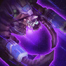 |
Apocalisk Now | Deal 100,000 damage with Apocalisks in Co-op Missions. |
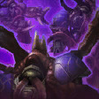 |
Short Term Infestment | Spawn 5,000 Infested Marines in Co-op Missions. |
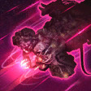 |
The Stukov Maneuver | Deal 100,000 damage with the Aleksander in Co-op Missions. |
Calldowns
The calldowns for Stukov, at level 15, with no mastery points added are:
| Calldown | Name | Description | Recommended Usage | Numbers |
|---|---|---|---|---|
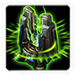 |
Deploy Psi Emitter | Sends all currently existing and newly constructed infested infantry units to the designated point. |
|
|
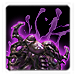 |
Infest Structure | Infests target friendly or enemy structure, causing it to spawn 60 Broodlings over 20 seconds. Friendly structures are healed for 25 life per second and enemy structures are disabled for the duration of the effect. |
|
|
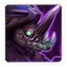 |
Apocalisk | Spawns an Apocalisk at the target location. The Apocalisk is controllable and will fight for 60 seconds. |
|
|
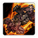 |
Aleksander | Calls down the Aleksander Infested Battlecruiser at the target location. The Aleksander is controllable and will fight for 60 seconds. |
|
|
The Apocalisk ability brings an Apocalisk onto the battlefield. This unit has abilities itself, shown below:
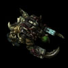
Apocalisk
| Ability | Name | Description | Cooldown |
|---|---|---|---|
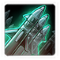 |
Cluster Rockets | Fires a salvo of 5 missiles at the target enemy air unit, dealing a total 100 damage. (40 missiles max) | 10 seconds/5 missiles |
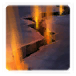 |
Burrow Charge | Burrow and charge at the target location dealing 150 damage and stunning non-heroic enemies for 5 seconds. | 10 seconds |
Sub-Ascension Leveling
Difficulty: Easy
Stukov plays the same way he does at Ascension levels when he is at lower levels. However, the spawn rate of his infested units is significantly lower (due to the lack of the Engorged Bunkers upgrade). Therefore, be careful when you choose to unload Bunkers for a swell of Infested, as it will take a while before Bunkers get refilled.
Masteries
Below are the three Power Sets for Stukov with the recommended point allocations for each. Note that these are meant to serve a general, all-purpose build that is effective across all maps with no Prestiges selected. You are highly encourged to change these masteries to suit your playstyle and particular challenges you face (e.g. Weekly Mutations).
Power Set 1:
| Power | Value | Recommended Points to Add | Further Considerations |
|---|---|---|---|
| Volatile Infested Spawn Chance | 0.5% per point 15% maximum |
30 | Players that use Infest Structure more aggressively might consider adding some points into that respective mastery. However, they should also consider the fact that Volatile Infested can deal a lot of splash damage, which can help weaken enemy defenses. |
| Infest Structure Cooldown | -1.5 sec per point -45 sec maximum |
0 |
The Volatile Infested increase your commander power level. Additionally, it also causes the Aleksander to start spawning Volatile Infested units. While Infest Structure is useful, its power level does not match that of actual units on the field.
Power Set 2:
| Power | Value | Recommended Points to Add | Further Considerations |
|---|---|---|---|
| Aleksander Cooldown | -3 sec per point -90 sec maximum |
0 | Players that prefer to push into enemy bases backed up by the Aleksander (which provides a damage reduction buff) might find it useful to add some points into the Aleksander mastery. However, they will be taking away points from the Apocalisk mastery, which allows it to be spammed more frequently. |
| Apocalisk Cooldown | -3 sec per point -90 sec maximum |
30 |
While the Aleksander is significantly more powerful, you probably won't be using it as much as the Apocalisk, which can be spammed to deal with attack waves and small pushes.
Power Set 3:
| Power | Value | Recommended Points to Add | Further Considerations |
|---|---|---|---|
| Infested Infantry Duration | 1 sec per point 30 sec maximum |
30 | Players that rely on a strong presence of Mechanical units (Diamondbacks, Liberators and Siege Tanks) may prefer to add points into the Mech mastery to further strengthen their army. |
| Mech Attack Speed | 1% per point 30% maximum |
0 |
You probably won't be using enough Mech units to justify the Mech Attack Speed mastery. The Duration mastery affects all infested units, which makes it much more powerful.
Prestiges
Below are the prestiges for Stukov. Note that "Effective Level" is the level at which the prestige achieves it full effect.
| Level | Name | Description | Effective Level | Notes |
|---|---|---|---|---|
| 1 | Frightful Fleshwelder |
|
1 | None |
| This prestige puts Stukov's mech units well within reach in the early game, allowing him to have map presence by removing tech requirements and providing a cost reduction to his units. It is an extremely powerful prestige and the loss of the Infested Colonist Compound only affects the infested in the infested-specific upgrades (Anaerobic Enhancement and Broodling Gestation). While those upgrades are useful, their value does not match up to that of having significantly cheaper mech units. | ||||
| Level | Name | Description | Effective Level | Notes |
|---|---|---|---|---|
| 2 | Plague Warden |
|
1 |
|
| This prestige makes Banshees double up as Medivacs to shuttle Infested Infantry to various locations on the map. While this prestige allows for some creative strategies to be utilized, the excessive amount of micro required to load and unload units from Banshees is not worth the payback. Additionally, Infested Banshees generally are not as effective as Diamondbacks in dealing with most ground objectives, especially considering their high cost, rendering this prestige fairly useless. | ||||
| Level | Name | Description | Effective Level | Notes |
|---|---|---|---|---|
| 3 | Lord of the Horde |
|
1 | None |
| This prestige converts Bunkers from static defense structures to Infested Trooper generators. Bunkers lose the loaded troopers functionality, but they generate Infested units at a highly accelerated rate. For players that prefer a mass Bunker strategy, this prestige is better than having no prestige talents selected. The prestige works well with the Infested Duration mastery, and on maps where you are required to push in a single direction. Missions like Temple of the Past will provide a little more challenge for players using this Prestige. It can be very effective against mutators such as Boom Bots, Black Death and Kill Bots | ||||
Frightful Fleshwelder takes Stukov's most powerful units and puts them within reach of the early game, his weakest phase in the game. The versatility of that prestige is great and causes it to outshine the other prestiges and is the recommended prestige for general Stukov play at the very least.
Recommended Army Composition
The recommended army composition for Stukov is below. Note that this assumes no Prestige talent selected and recommended Mastery Allocations. This is a basic recommendation for your army framework. It is recommended to gain an understanding for each of the units in the Units section and further add tech units so that you are able to better handle the situations you face.
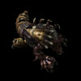
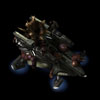
Focus on teching up to an Infested Diamondback build and dump remaining minerals into Infested Bunkers and Infested Colonist Compound upgrades.
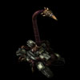
Add Infested Siege Tanks to you army if you need to hold certain defensive positions.
Combat Units
For more information on Stukov's unit stats, comparison between units and upgrade calculations, visit the Data Tables page.
Stukov's combat units are listed below:
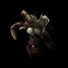
Infested Civilian
- Spawned from the Infested Colonist Compound.
- Highly recommended to buy all Infested Colonist Compound upgrades, due to their power level and their ability to snowball the game.
- They last 90 seconds.
Skills: None
Upgrades:
| Upgrade | Name | Effect |  / / |
Research Time |
|---|---|---|---|---|
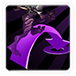 |
Anaerobic Enhancement | Allows Infested Civilians to quickly leap toward nearby enemy ground units. | 100/100 | 60 seconds |
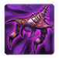 |
Broodling Gestation | Infested Civilians spawn a Broodling when they die. | 150/150 | 90 seconds |
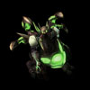
Volatile Infested
- Spawned in place of some civilians from the Infested Colonist compound.
- Lasts 90 seconds.
- Deals splash damage upon death.
- Also spawns from Infested Siege Tank shots.
- Benefits from the Infested Siege Tank's Acidic Enzymes upgrade.
Skills: None
Upgrades:
| Upgrade | Name | Effect | / |
Research Time |
|---|---|---|---|---|
| Anaerobic Enhancement | Allows Infested Civilians to quickly leap toward nearby enemy ground units. | 100/100 | 60 seconds | |
| Broodling Gestation | Infested Civilians spawn a Broodling when they die. | 150/150 | 90 seconds | |
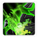 |
Acidic Enzymes | Infested Siege Tanks deal an additional +15 damage to armored units and structures in both modes. | 150/150 | 90 seconds |
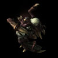
Infested Marine/Trooper
- Spawned from the Barracks.
- Bunkers spawn "Infested Troopers", which have the same stats, except for life span. Marines have 90 seconds, Troopers have 30 seconds.
Skills: None
Upgrades:
| Upgrade | Name | Effect | / |
Research Time |
|---|---|---|---|---|
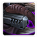 |
Retinal Augmentation | Infested Marines and Infested Troopers gain +1 attack range. | 100/100 | 60 seconds |
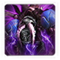 |
Plagued Munitions | Infested Marines and Infested Troopers deal an additional 50 damage over 15 seconds to units they attack. | 150/150 | 90 seconds |
Infested Bunker
- Rooted Infested Bunkers spawn Infested Troopers every 24 seconds.
- Rooted Infested Bunkers have high HP regeneration, even without the upgrade, which is also recommended.
- Uprooted Infested Bunkers have a melee attack as well as a ranged attack.
Skills: None
Upgrades:
| Upgrade | Name | Effect | / |
Research Time |
|---|---|---|---|---|
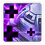 |
Regenerative Plating | Infested Bunkers regenerate life twice as fast while rooted. | 100/100 | 60 seconds |
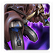 |
Calcified Armor | Infested Bunkers gain +3 armor. | 100/100 | 60 seconds |
Infested Diamondback
- Powerful unit in Stukov's arsenal when used correctly.
- Kiting enemy units is important to prevent damage taken.
- Can use Fungal Snare to allow enemy air units to be attacked by ground units.
- Cannot Fungal Snare units with the Unstoppable tag (such as Shuttles on Void Launch)
Skills:
| Skill | Name | Description | Cooldown | Energy Cost |
|---|---|---|---|---|
| Fungal Snare | Brings a target enemy air unit to the ground, allowing units to attack it as if it were a ground unit. | 45 seconds | 0 |
Upgrades:
| Upgrade | Name | Effect | / |
Research Time |
|---|---|---|---|---|
| Saturated Cultures | Reduces the cooldown of the Infested Diamondback's Fungal Snare by 15 seconds. | 100/100 | 60 seconds | |
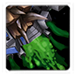 |
Caustic Mucus | Infested Diamondbacks leave behind a trail of acid when moving that deals 20 damage per second to enemy units. | 150/150 | 90 seconds |
Infested Siege Tank
- Can use Deep Tunnel to any visible location with creep with a 60 second cooldown.
- Uses Infested Civilians (from the Infested Colonist Compound) or Infested Troopers (from the Infested Bunkers) as ammunition.
- Cannot use Infested Marines from the Barracks.
- Heals 20 HP whenever it loads an Infested unit
- Has 18 range when rooted.
Skills:
| Skill | Name | Description | Cooldown | Energy Cost |
|---|---|---|---|---|
| Deep Tunnel | Can travel quickly to any visible location with creep. | 60 seconds | 0 |
Upgrades:
| Upgrade | Name | Effect | / |
Research Time |
|---|---|---|---|---|
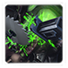 |
Automated Mitosis | Infested Siege Tanks automatically spawn 1 round of Volatile Biomass every 30 seconds. | 100/100 | 60 seconds |
| Acidic Enzymes | Infested Siege Tanks deal an additional +15 damage to armored units and structures in both modes. | 150/150 | 90 seconds |
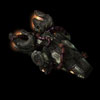
Infested Liberator
- Powerful anti-air solution for Stukov.
- Not recommended to mass them due to high chance of overkilling targets.
- Cloud Dispersal upgrade is a must-get.
Skills: None
Upgrades:
| Upgrade | Name | Effect | / |
Research Time |
|---|---|---|---|---|
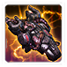 |
Viral Contamination | Increases the damage Infested Liberators deal to their primary target by 100%. | 100/100 | 60 seconds |
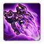 |
Cloud Dispersal | Infested Liberators instantly transform into a cloud of microscopic organisms while attacking, reducing the damage they take by 85%. | 100/100 | 60 seconds |
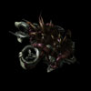
Infested Banshee
- Generally not recommended due to the existence of better anti-ground units.
- Can burrow to regenerate HP and Energy faster.
Skills:
| Skill | Name | Description | Cooldown | Energy Cost |
|---|---|---|---|---|
 |
Cloak | Cloaks the unit, preventing enemy units from seeing or attacking it. A cloaked unit will only be revealed by detectors or effects. Cloaked Infested Banshees also have their range increased by 2. Drains 0.9 energy per second. |
0 seconds | 0 |
| Burrow | Buries the unit underground. Burrowed units are unable to move or attack, but they cannot be seen without detection. | 0 seconds | 0 |
Upgrades:
| Upgrade | Name | Effect | / |
Research Time |
|---|---|---|---|---|
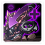 |
Rapid Hibernation | Allows Infested Banshees to burrow. Infested Banshees regenerate 20 life and energy per second while burrowed. | 100/100 | 60 seconds |
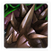 |
Braced Exoskeleton | Infested Banshees gain +100 life. | 100/100 | 60 seconds |

Brood Queen
- Mostly useful for its Fungal Growth ability, which can decimate attack waves with low HP units, such as Swarmy Zerg.
- Spawn Broodling is relatively ineffective due to the Brood Queen's high aggro rating, which increases the likelihood of losing it.
- Ocular Symbiote should only be used if no detection is present.
Skills:
| Skill | Name | Description | Cooldown | Energy Cost |
|---|---|---|---|---|
| Ocular Symbiote | Increases a friendly unit's sight range by 5 and grants it the ability to detect cloaked and burrowed units for 180 seconds. | 0 seconds | 25 | |
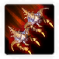 |
Spawn Broodlings | Deals 300 damage to a target enemy unit. When the unit dies, it will spawn 2 Broodlings from its corpse. | 0 seconds | 100 |
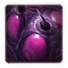 |
Fungal Growth | Immobilizes enemy units and deals 80 damage over 4 seconds. Reveals cloaked and burrowed units. | 0 seconds | 75 |
Upgrades:
| Upgrade | Name | Effect | / |
Research Time |
|---|---|---|---|---|
 |
Fungal Growth | Allows Brood Queens to immobilize enemy units and deal 80 damage to them over 4 seconds, and reveal them if they are cloaked or burrowed. | 100/100 | 60 seconds |
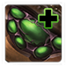 |
Enhanced Mitochondria | Increases the Brood Queen's energy regeneration rate by 100%. Brood Queens spawn with full energy. | 100/100 | 60 seconds |
Build Order
Below is the standard economic build order for Stukov. For more information on how to read and construct your own build orders, please check the Build Order Theory page.
15 Overlord
15 Refinery
19 Command Center at Rocks
21 Refinery
21 Anaerobic Enhancement
22 Engineering Bay
22 Overlord
24 Broodling Gestation
25 Barracks
Gameplay Guide
Playstyle Traps
A common trap for Stukov players is to opt for a Barracks-based build. While for most intents and purposes this is fine, this strategy may fail on missions which last much longer than the average game time. These situations may arise on some mutators. With a long game time, a Barrack's based Stukov player may run out of minerals as their Infested army is not persistent.
A better build is to go for a Bunker-based build, which spawns free Infested units. The Bunker build is superior to the Barracks build, even on regular missions, due to the higher strength of the Bunker, and its ability to regenerate health. Additionally, the infested troopers inside the Bunkers do not have timed life until they are removed from the Bunker.
The Infested Colonist Compound
The Infested Colonist Compound provides some of the most powerful upgrades and makes up the core of Stukov's army. Every 60 seconds, the Compound creates a wave of Infested Civilians based on its level. The Civilians start off in eggs, and take 30 seconds to hatch.
The Infested Colonist Compound infestation level is persistent. That is, if it is destroyed, it will keep its level when rebuilt.
| Level | Eggs | Requirements | / |
|---|---|---|---|
| 0 | 8 | - | - |
| 1 | 16 | Infested Barracks | 200/0 |
| 2 | 32 | Infested Engineering Bay | 300/100 |
| 3 | 64 | Infested Armory | 400/200 |
Playstyle Tips
- When using Siege Tanks, ensure you place your Psi Emitter near the Siege tanks if they are not near Bunkers.
- Infested Bunkers are structures when rooted and units when uprooted. Root and uproot your Bunkers to effectively counter units (e.g rooted Bunkers vs. Widow Mines and uprooted Bunkers vs. Reapers).
- Before pushing into an enemy base, root a Bunker, cast Infest Structure on it, then unroot it and move it forward. The Infest Structure will heal the Bunker.
- When a Bunker is at low HP, unload it to reduce its aggro rating, providing it a way to escape without dying.
- The Acidic Enzymes upgrade (available at the Factory's Tech Lab) affects Volatile Infested, which happen to be fired from the Siege Tanks. Therefore, buying this upgrade will also affect the Volatile Infested spawned from the compound.